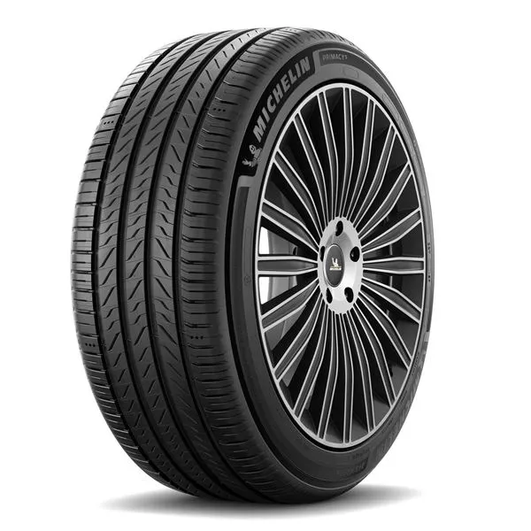

Michelin Primacy 5 235/50R18

RM 520.00
MICHELIN Primacy 5 – 235/50R18 97W. A premium touring tyre designed for passenger cars and SUVs, offering excellent wet braking performance, long-lasting tread life and a quiet, comfortable driving experience. Its advanced tread compound and optimized pattern help improve road safety, reduce rolling noise and enhance energy efficiency. Suitable for petrol, hybrid and electric vehicles. Tyre Size: 235/50R18 Load Index: 97 (730 kg) Speed Rating: W (270 km/h) Type: Premium Touring / Summer Tyre Suitable For: Passenger Cars / SUVs / EVs Run Flat: No
Klang Hock Li Tyre Services Sdn Bhd, Klang, Selangor, Malaysia.
View live product details and enquire